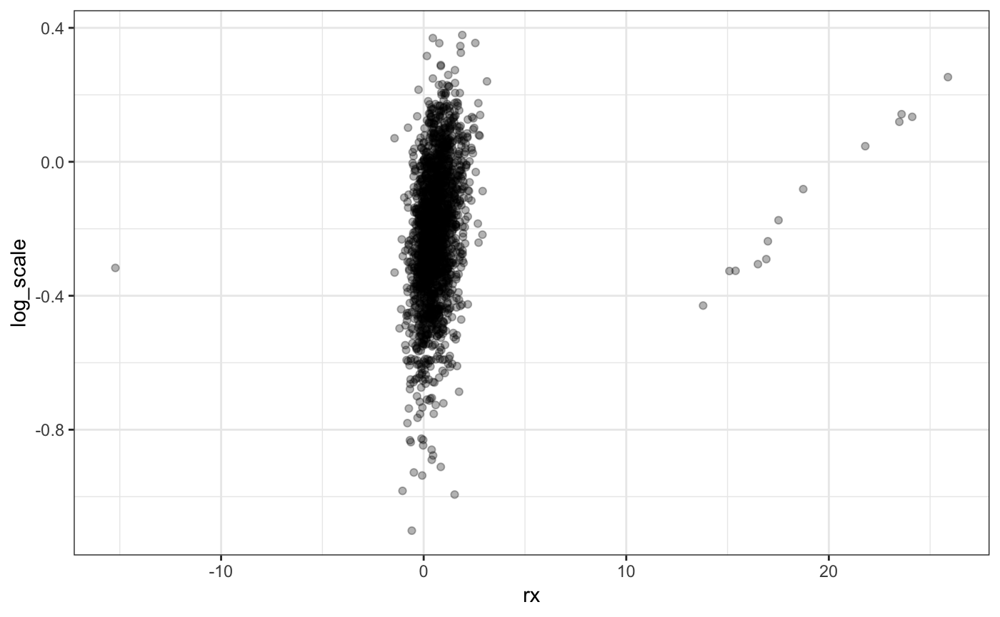
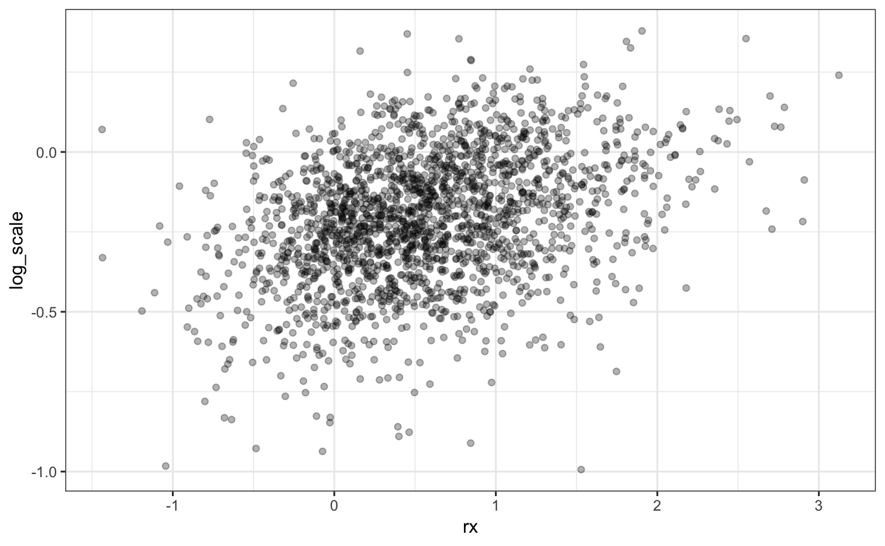

Bootstrap Confidence Intervals
Intervals.RmdThe bootstrap was originally intended for estimating confidence intervals for complex statistics whose variance properties are difficult to analytically derive. Davison and Hinkley’s Bootstrap Methods and Their Applications is a great resource for these methods. rsample contains a few function to compute the most common types of intervals.
To demonstrate the computations for the different types of intervals, we’ll use a event time data set and parametric survival models. We’ll use the ubiquitous Ovarian cancer data to demonstrate with a simple model with two terms.
library(rsample)
library(purrr)
library(dplyr)
library(ggplot2)
library(survival)
f <- Surv(futime, fustat) ~ ecog.ps + rx
# Will be used to fit the models to different bootstrap data sets:
fit_fun <- function(split, ...) {
survreg(..., data = analysis(split))
}First, let’s create a set of resamples and fit separate models to each. The options apparent = TRUE will be set. This create a final resample that is simple a copy of the original (unsampled) data set. This is required for some of the interval methods.
set.seed(462)
ov_bt <-
bootstraps(ovarian, times = 2000, apparent = TRUE) %>%
mutate(models = map(splits, fit_fun, f, dist = 'weibull'))
ov_bt## # Bootstrap sampling with apparent sample
## # A tibble: 2,001 x 3
## splits id models
## * <list> <chr> <list>
## 1 <split [26/9]> Bootstrap0001 <S3: survreg>
## 2 <split [26/9]> Bootstrap0002 <S3: survreg>
## 3 <split [26/9]> Bootstrap0003 <S3: survreg>
## 4 <split [26/8]> Bootstrap0004 <S3: survreg>
## 5 <split [26/8]> Bootstrap0005 <S3: survreg>
## 6 <split [26/11]> Bootstrap0006 <S3: survreg>
## 7 <split [26/8]> Bootstrap0007 <S3: survreg>
## 8 <split [26/10]> Bootstrap0008 <S3: survreg>
## 9 <split [26/11]> Bootstrap0009 <S3: survreg>
## 10 <split [26/10]> Bootstrap0010 <S3: survreg>
## # … with 1,991 more rowsFor each of the interval methods, we’ll need to extract the coefficients from each model. The tidy method can do this:
## Call:
## survreg(formula = ..1, data = analysis(split), dist = "weibull")
##
## Coefficients:
## (Intercept) ecog.ps rx
## 8.1289142 -1.1085280 0.2434273
##
## Scale= 0.6680351
##
## Loglik(model)= -106.3 Loglik(intercept only)= -111
## Chisq= 9.36 on 2 degrees of freedom, p= 0.00929
## n= 26one_model %>% broom::tidy()## # A tibble: 4 x 7
## term estimate std.error statistic p.value conf.low conf.high
## <chr> <dbl> <dbl> <dbl> <dbl> <dbl> <dbl>
## 1 (Intercept) 8.13 0.932 8.72 2.82e-18 6.30 9.96
## 2 ecog.ps -1.11 0.428 -2.59 9.59e- 3 -1.95 -0.270
## 3 rx 0.243 0.369 0.659 5.10e- 1 -0.481 0.968
## 4 Log(scale) -0.403 0.221 -1.83 6.75e- 2 NA NAWe will focus on the model terms for rx and the Weibull scale parameter here. Note that the scale parameter does not have a parametric confidence interval. For each model, we can extract these specific parameter estimates:
ov_bt <-
ov_bt %>%
mutate(
rx = map_dbl(
models,
~ broom::tidy(.x) %>% filter(term == "rx") %>% pull(estimate)
),
log_scale = map_dbl(
models,
~ broom::tidy(.x) %>% filter(term == "Log(scale)") %>% pull(estimate)
)
)However, if we look at the estimates, there are some outliers:
ggplot(ov_bt, aes(x = rx, y = log_scale)) +
geom_point(alpha = .3)
These aberrant points correspond to models that had convergence issues. Let’s extract the number of iterations and filter out models that required more than 15 iterations. The distributions are less problematic by doing this:
ov_bt_filtered <-
ov_bt %>%
mutate(iters = map_int(models, pluck, "iter")) %>%
dplyr::filter(iters <= 15)
ggplot(ov_bt_filtered, aes(x = rx, y = log_scale)) +
geom_point(alpha = .3)
Three were 26 models removed by doing so.
The univariate distirbutions are:
ov_bt_filtered %>%
dplyr::select(rx, log_scale) %>%
gather(terms, statistic) %>%
ggplot(aes(x = statistic)) +
geom_histogram(bins = 30, col = "red", fill = "red", alpha = .5) +
facet_wrap(~ terms, scales = "free_x")
The most basic type of interval uses percentiles of the resampling distribution. To get the percentile intervals, the rset objects is passed as the first argument and the columns of interest in the rset object are passed (unquoted):
p_ints <- int_pctl(ov_bt_filtered, rx, log_scale)
p_ints## # A tibble: 2 x 6
## lower estimate upper alpha .method statistic
## <dbl> <dbl> <dbl> <dbl> <chr> <chr>
## 1 -0.592 0.570 1.93 0.05 percentile rx
## 2 -0.617 -0.208 0.157 0.05 percentile log_scaleWhen overlyed with the univariate distributions:
ov_bt_filtered %>%
dplyr::select(rx, log_scale) %>%
gather(statistic, coefficients) %>%
ggplot(aes(x = coefficients)) +
geom_histogram(bins = 30, col = "red", fill = "red", alpha = .5) +
facet_wrap(~ statistic, scales = "free_x") +
geom_vline(data = p_ints, aes(xintercept = lower)) +
geom_vline(data = p_ints, aes(xintercept = upper))
How does these compare to the parametric asymptotic values?
full_model <- survreg(f, data = ovarian, dist = 'weibull')
parametric <-
broom::tidy(full_model) %>%
dplyr::select(conf.low, estimate, conf.high, term) %>%
dplyr::filter(term %in% c("rx", "Log(scale)")) %>%
rename(lower = conf.low, upper = conf.high, statistic = term) %>%
mutate(alpha = 0.05, .method = "parametric") %>%
dplyr::select(lower, estimate, upper, alpha, .method, statistic)
intervals <-
bind_rows(parametric, p_ints) %>%
arrange(statistic, .method)
intervals## # A tibble: 4 x 6
## lower estimate upper alpha .method statistic
## <dbl> <dbl> <dbl> <dbl> <chr> <chr>
## 1 -0.617 -0.208 0.157 0.05 percentile log_scale
## 2 NA -0.123 NA 0.05 parametric Log(scale)
## 3 -0.509 0.529 1.57 0.05 parametric rx
## 4 -0.592 0.570 1.93 0.05 percentile rxThese are wider than the parametric intervals (which assume asymptotic normality). Do the estimates appear to be normally distributed? We can look at quantile-quantile plots:
ov_bt_filtered %>%
dplyr::select(rx, log_scale) %>%
gather(statistic, coefficients) %>%
ggplot(aes(sample = coefficients)) +
facet_wrap(~ statistic, scales = "free") +
stat_qq() +
stat_qq_line()
The departures from normality may account for the different in the intervals (and would suggest that the nonparametric estimates are better).
Bootstrap t-intervals are estimated by computing intermediate statistics that are t-like in structure. To use these, we require the estimated variance for each individual resampled estimate. In our example, this comes along with the fitted model object. We can extract the variance of the parameters:
ov_bt_filtered <-
ov_bt_filtered %>%
mutate(
rx_var = map_dbl(
models,
~ broom::tidy(.x) %>% filter(term == "rx") %>% pull(std.error)
),
rx_var = rx_var^2,
log_scale_var = map_dbl(
models,
~ broom::tidy(.x) %>% filter(term == "Log(scale)") %>% pull(std.error)
),
log_scale_var = log_scale_var^2
)
ov_bt_filtered %>% select(-id, -models, -splits, -iters) %>% slice(1:4)## # A tibble: 4 x 4
## rx log_scale rx_var log_scale_var
## <dbl> <dbl> <dbl> <dbl>
## 1 0.243 -0.403 0.137 0.0487
## 2 1.34 -0.329 0.242 0.0644
## 3 -0.316 -0.294 0.277 0.0801
## 4 0.676 0.0411 0.391 0.0580The t-intervals require the names of the variance columns (assumed to be in the same order as the original values). These names can be wrapped inside of a dplyr vars function:
t_ints <- int_t(ov_bt_filtered, rx, log_scale, var_cols = vars(ends_with("var")))
intervals <-
bind_rows(intervals, t_ints) %>%
arrange(statistic, .method)
intervals## # A tibble: 6 x 6
## lower estimate upper alpha .method statistic
## <dbl> <dbl> <dbl> <dbl> <chr> <chr>
## 1 -0.617 -0.208 0.157 0.05 percentile log_scale
## 2 -0.374 -0.208 0.413 0.05 student-t log_scale
## 3 NA -0.123 NA 0.05 parametric Log(scale)
## 4 -0.509 0.529 1.57 0.05 parametric rx
## 5 -0.592 0.570 1.93 0.05 percentile rx
## 6 -0.513 0.570 1.82 0.05 student-t rxFor bias-corrected (BCa) intervals, a different type of argument is required. The fn argument is a function that computes the statistic of interest. The first argument should be for an rsplit object and other arguments can be passed in using the ellipses. For example, to get the rx coefficient for the model:
mod_coef <- function(split, ..., term_name) {
res <- survreg(..., data = analysis(split))
rx_est <-
broom::tidy(res) %>%
dplyr::filter(term == term_name) %>%
pull(estimate)
rx_est
}
mod_coef(ov_bt_filtered$splits[[1]], f, dist = "weibull", term_name = "rx")## [1] 0.2434273# checking:
ov_bt_filtered$rx[[1]]## [1] 0.2434273These intervals use an internal leave-one-out resample to compute the Jackknife statistic and will recompute the statistic for every bootstrap resample. If the statistic is expensive to compute, this make take some time.
The user-facing function takes this function and a named list (called args) for any additional arguments that should be directed to the .... For example:
b_int_rx <-
int_bca(
ov_bt_filtered,
rx,
fn = mod_coef,
args = list(formula = f, dist = "weibull", term_name = "rx")
)
b_int_scale <-
int_bca(
ov_bt_filtered,
log_scale,
fn = mod_coef,
args = list(formula = f, dist = "weibull", term_name = "Log(scale)")
)
intervals <-
bind_rows(intervals, b_int_rx, b_int_scale) %>%
arrange(statistic, .method)
intervals## # A tibble: 8 x 6
## lower estimate upper alpha .method statistic
## <dbl> <dbl> <dbl> <dbl> <chr> <chr>
## 1 -0.434 -0.208 0.350 0.05 BCa log_scale
## 2 -0.617 -0.208 0.157 0.05 percentile log_scale
## 3 -0.374 -0.208 0.413 0.05 student-t log_scale
## 4 NA -0.123 NA 0.05 parametric Log(scale)
## 5 -0.590 0.570 1.94 0.05 BCa rx
## 6 -0.509 0.529 1.57 0.05 parametric rx
## 7 -0.592 0.570 1.93 0.05 percentile rx
## 8 -0.513 0.570 1.82 0.05 student-t rx